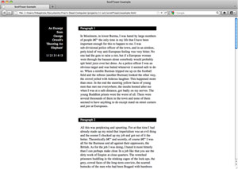

scrollToast
a jquery plugin
by francis baptiste
click here
to see it in action
How to use it:
It's just three quick and easy steps
1. Download the scrollToast.js file.
2. Add this line to your header:
<script type="text/javascript" src="scrollToast.js"></script>
3. Use the scrollToast function in your jQuery script.
$("#first").scrollToast("second");
The parameter is the ID of the page element you want to scroll to.
That's it!
Next>>
Example:
Click here to see an examples of scrollToast at work.
Or click here to download the exmaple folder.
